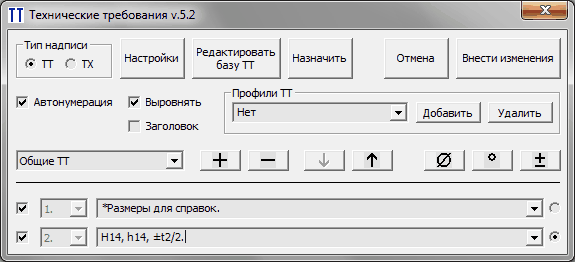
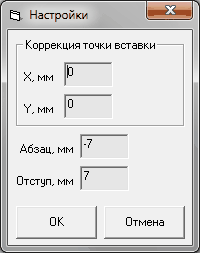
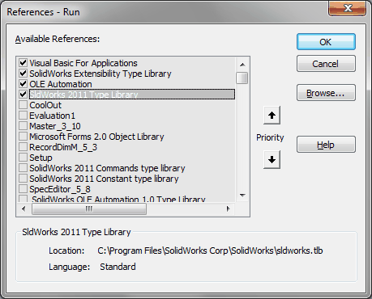

TT |
Top Previous Next |
|
Предназначен для создания на поле чертежа технических требований и технической характеристики.

qТип надписи - ТТ или ТХ. oТТ - режим работы с техническими требованиями. Из чертежа считывается заметка с именем ТТ (или ТТ1 и ТТ2) oТХ - режим работы с технической характеристикой. Из чертежа считывается заметка с именем ТХ (или ТХ1 и ТХ2) qАвтонумерация - включает/отключает режим автонумерации строк. При включенной автонумерации список номеров слева от строки становится неактивным, а отключение номера в начале строки выполняется с помощью галочки. При выключенной автонумерации галочки становятся неактивными, а номер можно установить вручную с помощью активных списков. Для пропуска номера нужно выбрать из списка стрелку. qВыровнять - управление выравниванием заметкой на чертеже. Доступно только для режима ТТ. qЗаголовок - добавление заголовка к ТТ и ТХ. qПрофили ТТ - Выпадающий список с именами профилей. Выбор профиля позволяет быстро назначить требуемый набор ТТ. Профили сохраняются в файле ТТ\TT_Prof.txt. Не рекомендуется редактировать этот файл вручную. oДобавить - добавляет новый профиль или обновляет существующий. Предварительно необходимо сформировать строки ТТ и ввести имя профиля. oУдалить - удаляет выбранный профиль из списка. qСписок категорий - выпадающий список, содержащий название категорий ТТ или ТХ. Считывается из файла ТТ\TT.txt или ТТ\TХ.txt. Название категорий в данных файлах начинается с $$$. q+ - вставляет новую строку, после активной; q- - удаляет активную строку; q˅ - перемещает активную строку вниз; q˄ - перемешает активную строку вверх; qD - вставляет знак диаметра <MOD-DIAM>; q° - вставляет знак градуса <MOD-DEG> q± - вставляет знак плюс/минус <MOD-PM> qРедактировать базу - открывает для редактирования файл ТТ\ТТ.txt или ТТ\TХ.txt. qНазначить - помечает выделенную заметку на чертеже как ТТ или ТХ. Заметка считывается в программу. qОтмена - выход из программы без внесения изменений в чертеж; qВнести изменения - создание или обновление заметки ТТ или ТХ на чертеже
Программа позволяет создавать ТТ и ТХ из двух частей. Чтобы разделить заметку на две части нужно установить переключатель справа от последней строки первой части.
qНастройки

qКоррекция точки вставки - смещения для Х и У координат точки вставки заметки ТТ. qАбзац - смещение первой строки относительно левого края; qОтступ - смещение первой и последующих строк друг относительно друга qОК - выход и сохранение настроек в файле TT.ini. qОтмена - выход из настроек без сохранения
Библиотеки:
 |